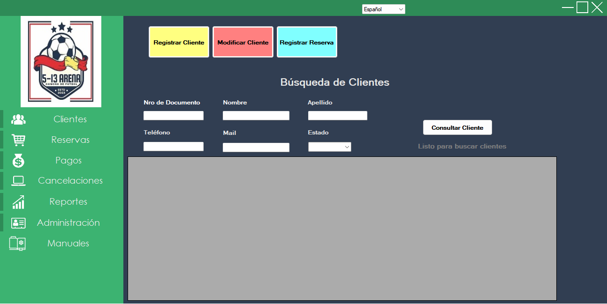
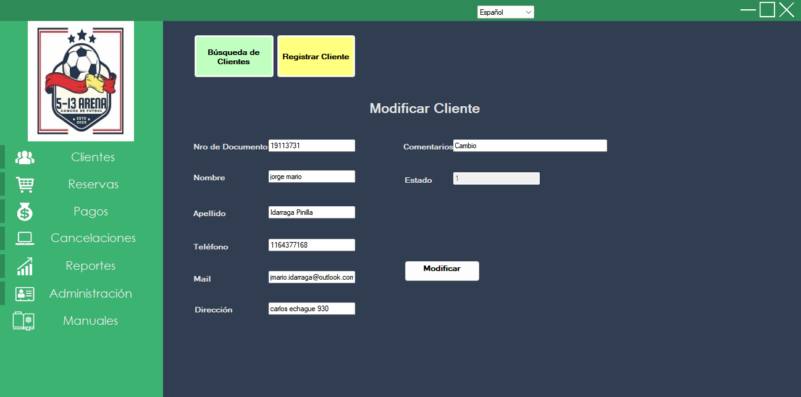

3.1 Módulo de Ventas – Clientes
3.1.1 Búsqueda de Clientes
En este módulo se realiza el ABM de clientes y se dispone de accesos rápidos a reservas.
- Complete uno o más filtros: Documento, Nombre, Apellido, Teléfono, Mail, Estado.
- Presione Consultar para listar resultados.
- Use los botones superiores para Registrar Cliente, Modificar Cliente o Registrar Reserva.

3.1.2 Registrar Cliente
- Ingrese Nro de Documento, Nombre, Apellido, Teléfono, Mail y Dirección.
- El campo Comentarios es opcional.
- Pulse Registrar. El sistema validará campos obligatorios y mostrará un mensaje de confirmación.

3.1.3 Modificar Cliente
- Busque el cliente, selecciónelo y luego ingrese a la sección Modificar Cliente.
- Modifique Nro de Documento, Nombre, Apellido, Teléfono, Mail y Dirección. El campo Comentarios es opcional. Puede visualizar el estado del cliente.
- Pulse Modificar. El sistema validará los campos obligatorios y mostrará confirmación.
